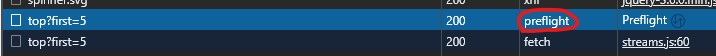
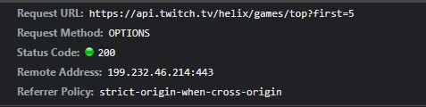
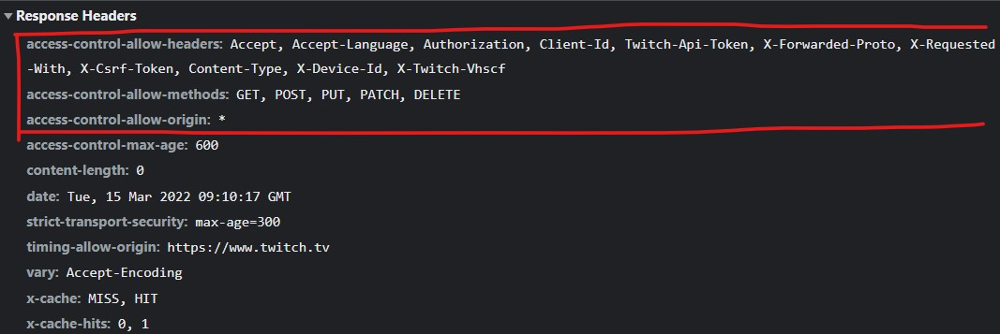

除了 CROS 以外，這也很重要。
簡述
如果只考慮「同源政策」的話，那下面這句話就能成立：
瀏覽器不論如何都會幫你發 request，只是會把 response 擋住。
這正是我以前的認知。但我一直忽略了一個東西，那就是除了同源政策以外，還有個東西叫做「Preflight request」，中文翻作「預檢請求」。
這個東西會改變上面說的論點，所以等一下會解釋：
- 什麼是 Preflight request？
- 為什麼需要 Preflight request？
關於 Preflight request
簡單來說，Preflight request 的用途就是「幫你問 Server 這個 request 他接不接受？」。
例如說，在我串 Twitch API 的時後要發一個 request 去取得遊戲資訊，出來的結果長這樣：

裡面的內容是：

會發現種類是 OPTIONS，它的用途是問 Server 接收哪些請求，所以我們再來看 Server 是怎麼回的：

如果我想得沒錯的話，應該就是從上面那幾個東西來決定要不要送出下一個 request：
access-control-allow-headers接受哪些 headeraccess-control-allow-methods接受哪些 HTTP Methodsaccess-control-allow-origin接受哪些來源
總之呢，只要這階段沒過的話，下個 request 就不會發出去了。這一點很重要，請務必銘記在心。
為什麼需要 Preflight request
你仔細想想就會發現「只有同源政策」是不夠的，為什麼？
假設今天有個 API 是透過對 https://example.com/data/:id 發出一個 request 來刪除資料，會有一個問題：任何人都可以發 request 來刪東西。
為什麼會這樣？因為同源政策的機制是「就算不同源也一樣會幫你發 request，只是會擋掉 response」，意思是說不管有沒有開 CROS 這份 request 都會送出去，只是拿不到 response 而已，但文章還是被刪除了。
Preflight request 就是用來解決這個問題的，它不希望任何人都能跨來源發 request。
什麼時候會觸發 Preflight request
首先要知道，CROS 會把 request 分成兩種：
- 簡單請求
- 非簡單請求
只要是非簡單請求，就會觸發 Preflight request，必須等到通過後才會幫你發 request。
那什麼是非簡單請求？詳細的定義蠻複雜的，可以參考 MDN。
總之呢，只要符合這兩點的話就一定是簡單請求：
- 用的方法是
GET - 沒有自定義 header（像 Twitch 要加上驗證 token 就不符合）
所以常見的 POST PUT DELETE 通常都不是簡單請求，這時候就會透過 Preflight request 先做確認，才決定要不要發出去。